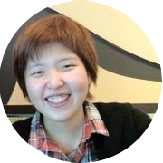

Profile

わたなべ なおみ
1986年生まれ。大阪府出身。大学中退後、未経験採用をしていたシステム会社にてプログラムの世界に入る。１年後、他の職業にも興味が出て職を転々とするも結局翌年には再度プログラムの世界に戻った。数年後、勤めていた会社が突然なくなったことをきっかけにフリーランスへ転向を決意、現在に至る。
趣味は旅行と乗馬（ブリティッシュ）※乗馬は現在お休み中。
わたなべ なおみ
1986年生まれ。大阪府出身。大学中退後、未経験採用をしていたシステム会社にてプログラムの世界に入る。１年後、他の職業にも興味が出て職を転々とするも結局翌年には再度プログラムの世界に戻った。数年後、勤めていた会社が突然なくなったことをきっかけにフリーランスへ転向を決意、現在に至る。
趣味は旅行と乗馬（ブリティッシュ）※乗馬は現在お休み中。